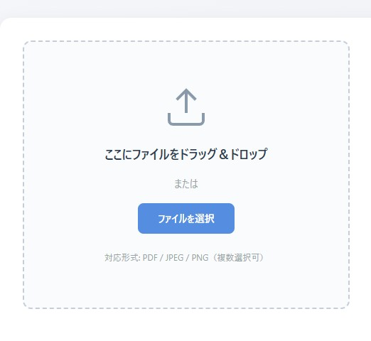
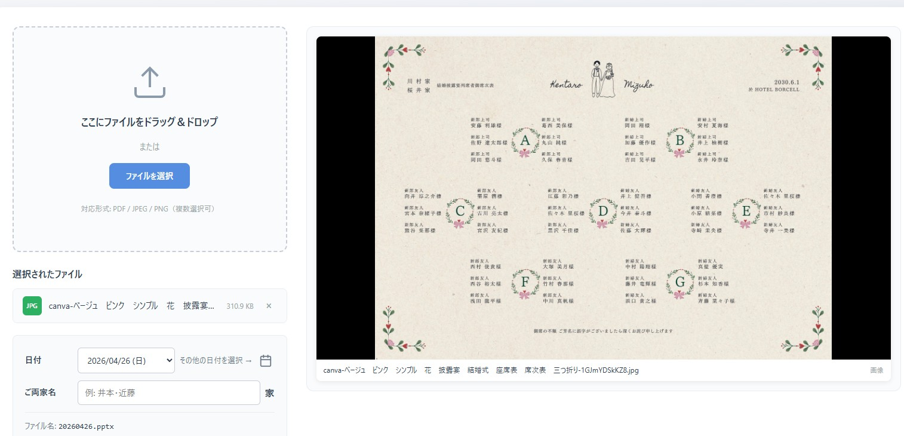
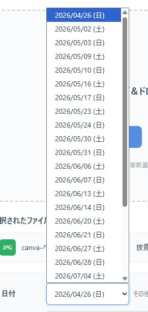
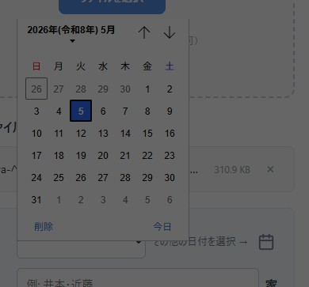
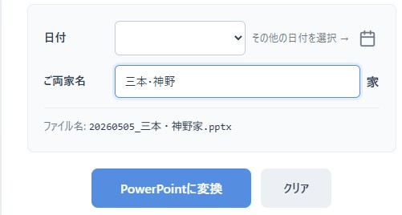
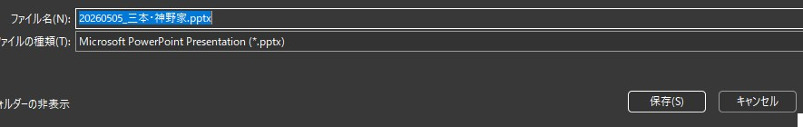
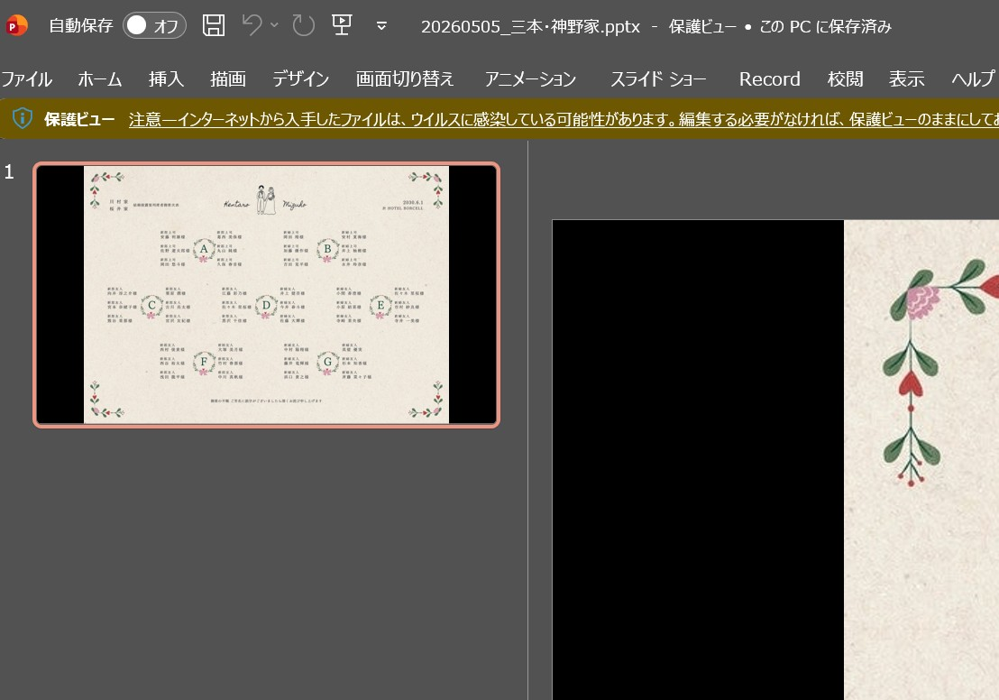

席次表のPDFや画像を、そのままPowerPointスライドにできるツールです。
席次表のファイルを画面中央のエリアにドラッグ＆ドロップするか、「ファイルを選択」ボタンをクリックして選びます。
対応形式: PDF / JPEG / PNG

右側に、PowerPointで表示されるイメージそのままの16:9プレビューが表示されます。黒い余白の入り方も実際のスライドと同じです。

左の「日付」ドロップダウンには、今日から3ヶ月先までの土日が並んでいます。直近の土日が最初から選ばれているので、そのまま使うか別の日を選んでください。

平日や祝日に挙式の場合は、右側のカレンダーアイコンをクリックすると、好きな日付を選べるカレンダーが開きます。

「ご両家名」欄に両家のお名前を「・」でつないで入れてください（例: 三本・神野）。
「家」は自動で末尾につくので、入力する必要はありません。
下にファイル名のプレビューが表示されます。確認してください。

「PowerPointに変換」ボタンをクリックすると、変換が始まります。
完了すると、PowerPointファイルの保存画面が出ます。そのまま「保存」をクリックしてください（ファイル名は自動で入力済みです）。

保存したファイルをダブルクリックするとPowerPointが開きます。すぐにスライド表示で投影できます。

PowerPoint 2007以降であれば問題なく開けます。式場のWindows PCならまず大丈夫です。
大きなPDF（50MB以上）は変換に時間がかかります。途中でタブやブラウザを閉じないでください。
Google Chrome または Microsoft Edge を推奨します。
ページを Ctrl + F5 で再読み込みしてみてください。それでも改善しない場合は管理者までご連絡ください。